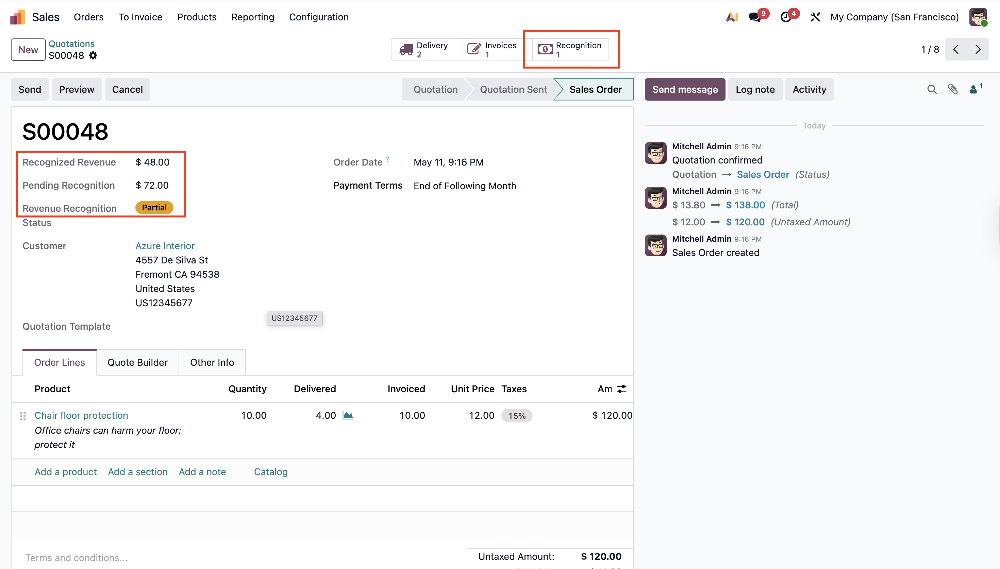
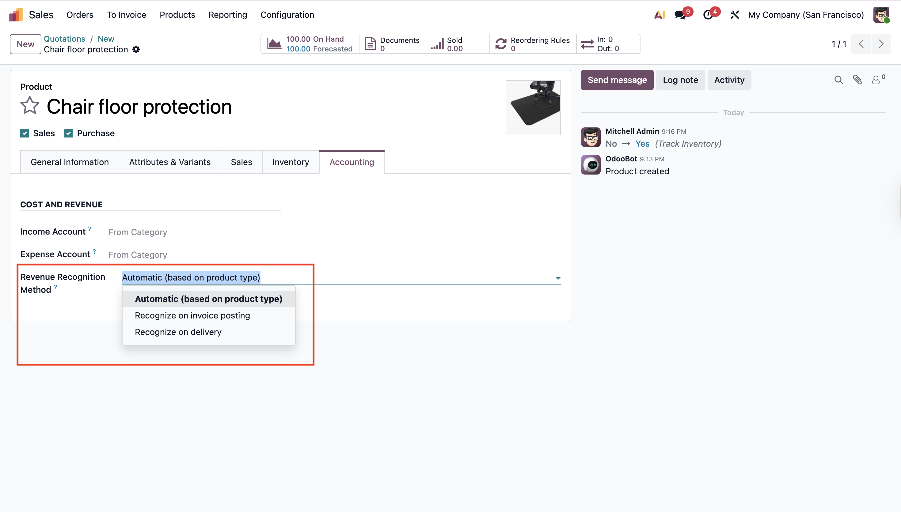
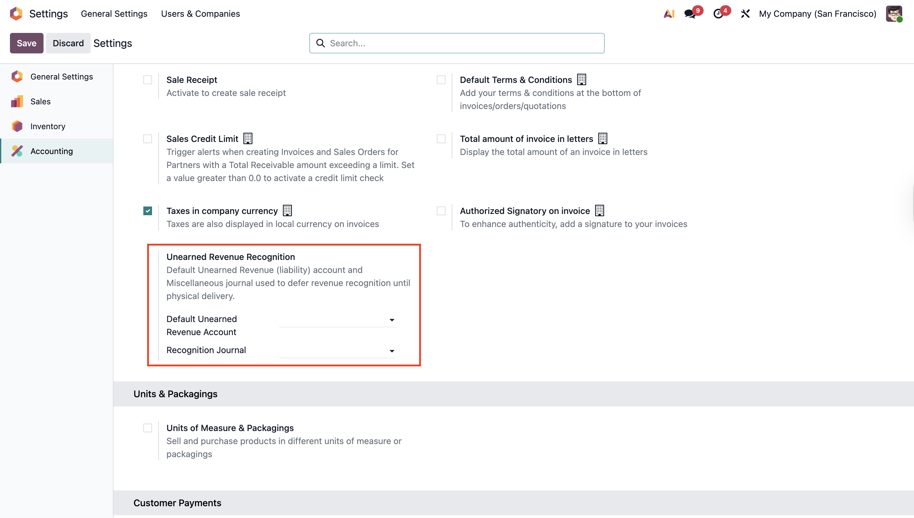
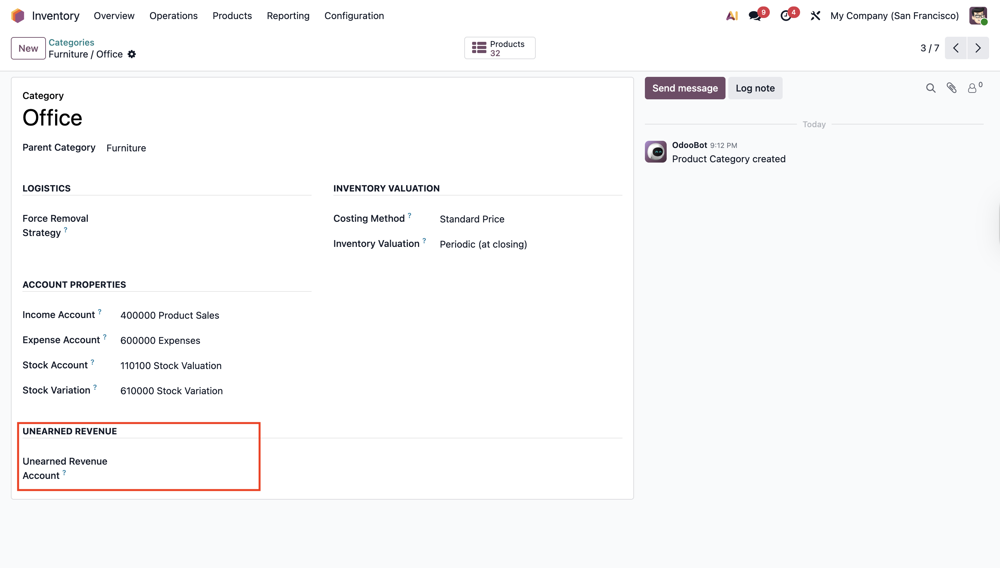

Defer revenue from invoice posting to physical delivery — IFRS 15 / ASC 606 compliant, built for retail, e-commerce, and wholesale workflows where customers pay upfront.
In retail and prepayment business models, customers pay 100% upfront when placing an order. The accounting team must invoice the full amount so accounts receivable and cash are tracked correctly — but recognizing revenue at invoice posting violates IFRS 15 and ASC 606, because the performance obligation (delivering the goods) hasn't been satisfied yet.
Standard Odoo behavior:
ON INVOICE: Dr Accounts Receivable Cr Sales Revenue ← too early!
Cr VAT Payable
ON PAYMENT: Dr Bank Cr Accounts Receivable
This module changes the pattern so revenue lands on the P&L only when goods are physically delivered:
ON INVOICE: Dr Accounts Receivable Cr Unearned Revenue (Balance Sheet liability)
Cr VAT Payable
ON PAYMENT: Dr Bank Cr Accounts Receivable
ON DELIVERY: Dr Unearned Revenue Cr Sales Revenue (P&L recognition ✓)
ON RETURN: Dr Sales Revenue Cr Unearned Revenue (auto reversal)
VAT is still recognized at invoice posting (correct per most tax-point rules, including the Lebanese and GCC patterns). Only the revenue side is deferred.
Automatic redirect on invoice postingInvoice lines generated from a sales order are routed to an Unearned Revenue liability account instead of Sales Revenue. AR, VAT, and tax accounts are untouched. |
Recognition on deliveryValidating an outgoing stock picking posts a Miscellaneous journal entry that moves the delivered portion from Unearned Revenue to Sales Revenue, in real time. |
Partial deliveries & backordersEach picking recognizes only its proportional share. Backorders recognize their portion when later validated. The audit trail tracks per-move quantities so re-validation can never double-count. |
Returns auto-reverseValidating an incoming return picking posts the inverse entry automatically, proportional to the returned quantity at the invoice's original FX rate. |
Credit notes protect Sales RevenueCredit notes against deferred invoices inherit the deferral account, so order modifications never accidentally hit the P&L. |
Multi-currency, frozen at invoice date
Recognition entries reuse the invoice's posted FX rate via the line's
|
Multi-company awareRecognition entries post in the correct company's books with its own chart of accounts. A multi-company record rule keeps audit lines scoped per company. |
Three-level configurationSet the deferral account per product category, fall back to a company-wide default, fall back to Odoo Enterprise's native Deferred Revenue Account. No client-specific hardcoding. |
Full audit trail
Every recognition and reversal writes a dedicated audit-trail row
( |
Smart buttons everywhereThe Sales Order, Customer Invoice, and Stock Picking forms each show a Revenue Recognition smart button with quick access to the filtered audit trail. |
SO recognition statusRecognized Revenue / Pending Recognition / Status (not_started / partial / complete) on every Sales Order header — at a glance. |
Deferred Revenue reportNew menu under Accounting → Reporting → Deferred Revenue lists all posted invoice lines still parked in deferral, grouped by partner. |
Every Sales Order shows Recognized Revenue, Pending Recognition, and a status badge (not started / partial / complete) in the header. The Recognition smart button opens the full audit trail filtered to this order.

Choose Automatic (goods → on delivery, services → on invoice), Recognize on invoice posting, or Recognize on delivery. The setting lives on each product's Accounting tab so you can override the auto behavior per SKU.

Set a fallback Unearned Revenue account and the recognition Misc journal under Accounting → Configuration → Settings → Customer Invoices. The fallback chain (category → company → Enterprise native) is documented above.

The Product Category form gains an Unearned Revenue Account field. Setting it overrides the company default for every product in that category — the recommended granularity for retail catalogs.

Automatic means storable / consumable goods recognize on delivery and services recognize on invoice — the right default for most retail catalogs.
ir.rule on the audit-trail model.| Odoo version | 19.0 (Community and Enterprise) |
| Dependencies | account, sale_management, stock, sale_stock — all standard Odoo. |
| Enterprise integration | account_accountant's native Deferred Revenue Account is detected at runtime and used as a fallback. Not required. |
| License | LGPL-3 |
| Tests | 22 unit tests covering invoice routing, recognition triggers, partial deliveries, returns, credit notes, idempotency, multi-currency, services, taxes, multi-invoice, security, and dropship. |
done. To undo a delivery, validate a return picking — recognition automatically reverses.We build Odoo implementations and modules for the Levant, GCC, and beyond.
Visit novalyftsolutions.com · License LGPL-3 · Free and open source.